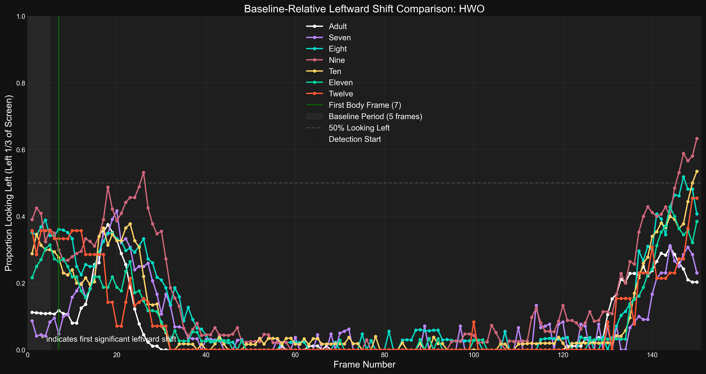
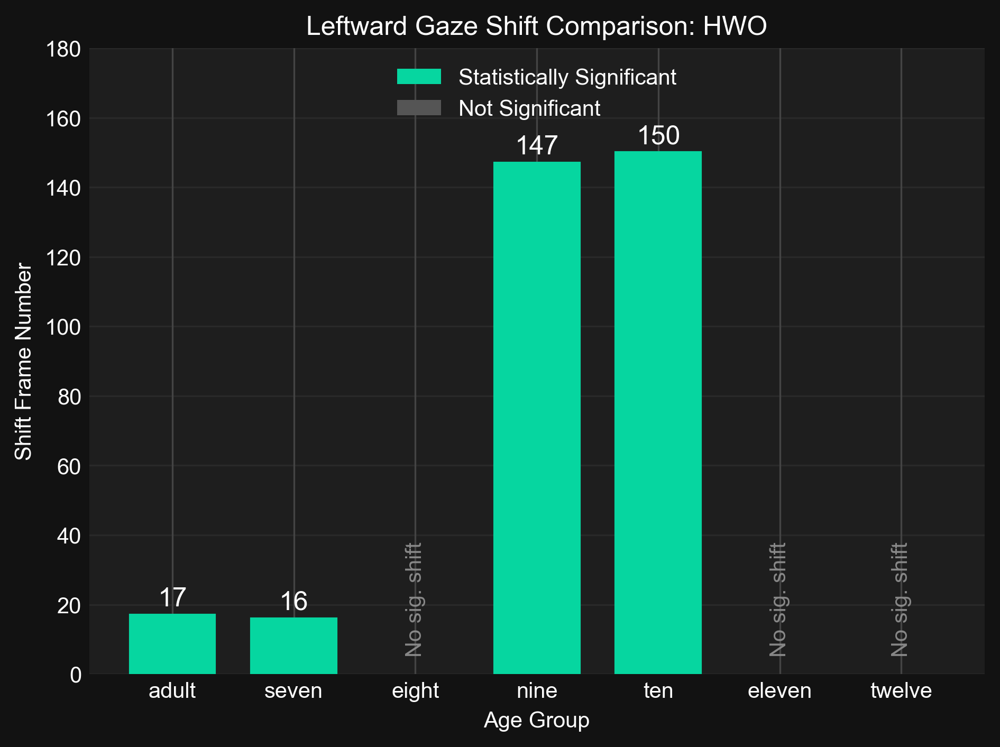
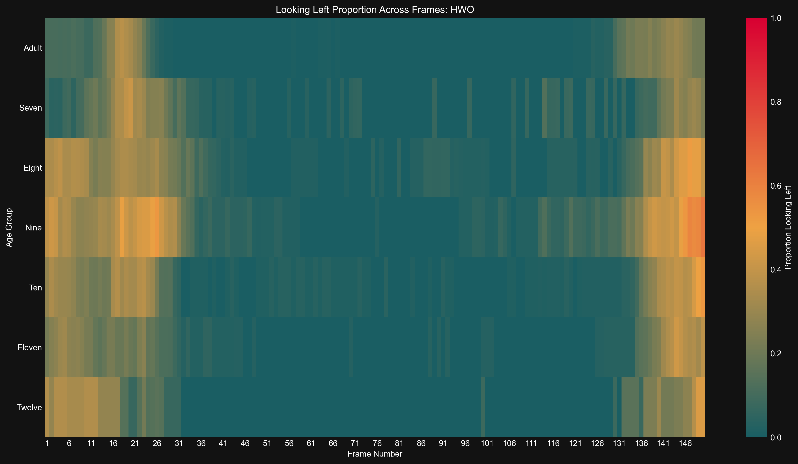
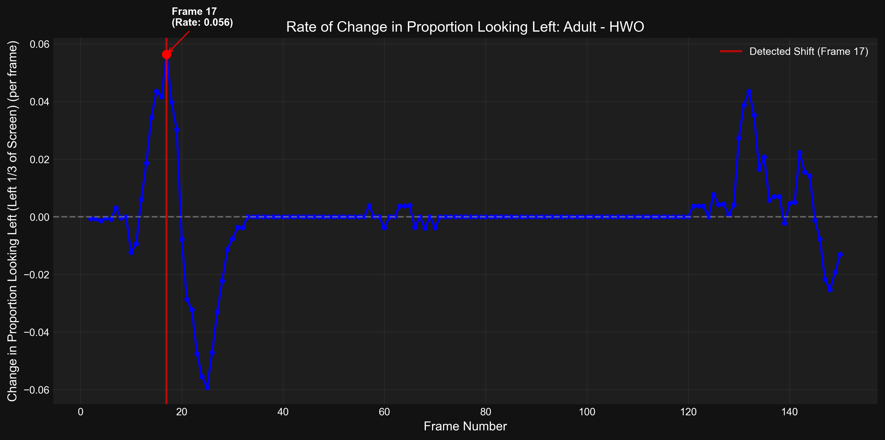
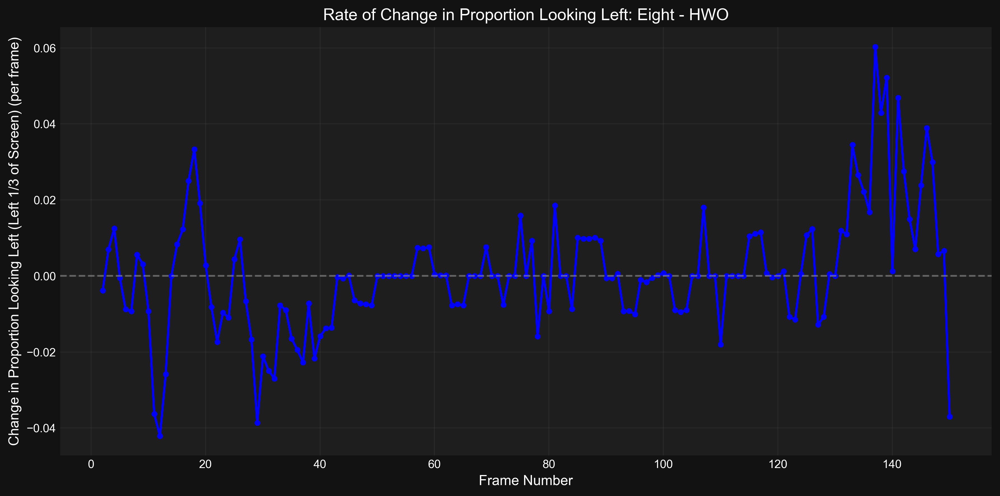
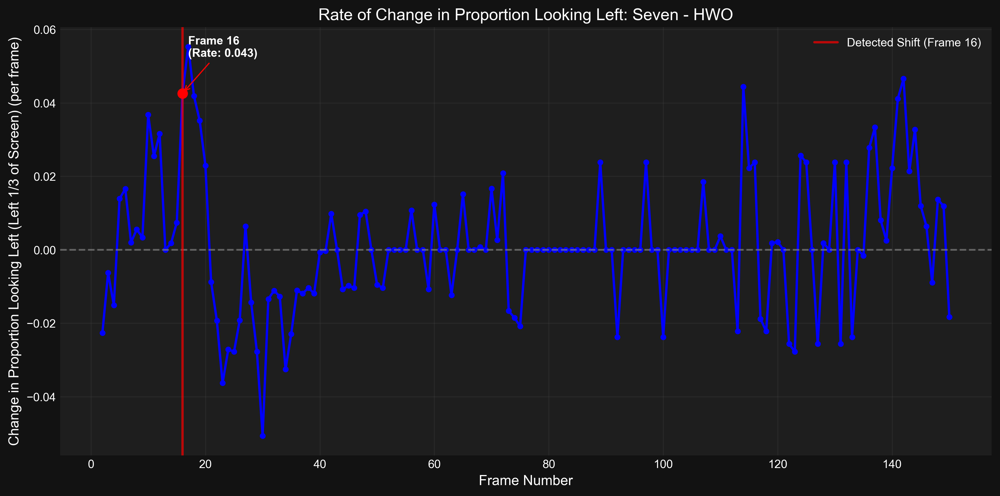
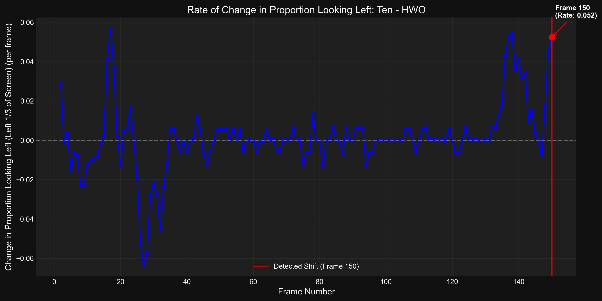

Visualization Index
Generated: 2025-04-16 16:44:44
Visualizations
Baseline Age Timeseries
adult
![Time series of the proportion of participants looking left over time for age group 'adult'. The blue line shows the proportion at each frame with 95% CI (gray area). The dotted red horizontal line indicates the calculated statistical threshold (0.26) for detecting a significant shift (baseline mean + 2.00*SD). The dashed purple line shows the baseline mean (0.11) during the baseline period (frames 0-5). The solid red vertical line marks the first significant shift frame (17). The green solid line indicates the First Body Frame at frame 7.](01_baseline_age_timeseries_01_adult_20250416_164436.png)
Time series of the proportion of participants looking left over time for age group 'adult'. The blue line shows the proportion at each frame with 95% CI (gray area). The dotted red horizontal line indicates the calculated statistical threshold (0.26) for detecting a significant shift (baseline mean + 2.00*SD). The dashed purple line shows the baseline mean (0.11) during the baseline period (frames 0-5). The solid red vertical line marks the first significant shift frame (17). The green solid line indicates the First Body Frame at frame 7.
File: 01_baseline_age_timeseries_01_adult_20250416_164436.png | Generated: 2025-04-16T16:44:42.905858eight
![Time series of the proportion of participants looking left over time for age group 'eight'. The blue line shows the proportion at each frame with 95% CI (gray area). The dotted red horizontal line indicates the calculated statistical threshold (0.51) for detecting a significant shift (baseline mean + 2.00*SD). The dashed purple line shows the baseline mean (0.36) during the baseline period (frames 0-5). No significant shift frame was detected. The green solid line indicates the First Body Frame at frame 7.](01_baseline_age_timeseries_03_eight_20250416_164436.png)
Time series of the proportion of participants looking left over time for age group 'eight'. The blue line shows the proportion at each frame with 95% CI (gray area). The dotted red horizontal line indicates the calculated statistical threshold (0.51) for detecting a significant shift (baseline mean + 2.00*SD). The dashed purple line shows the baseline mean (0.36) during the baseline period (frames 0-5). No significant shift frame was detected. The green solid line indicates the First Body Frame at frame 7.
File: 01_baseline_age_timeseries_03_eight_20250416_164436.png | Generated: 2025-04-16T16:44:38.391723eleven
![Time series of the proportion of participants looking left over time for age group 'eleven'. The blue line shows the proportion at each frame with 95% CI (gray area). The dotted red horizontal line indicates the calculated statistical threshold (0.42) for detecting a significant shift (baseline mean + 2.00*SD). The dashed purple line shows the baseline mean (0.27) during the baseline period (frames 0-5). No significant shift frame was detected. The green solid line indicates the First Body Frame at frame 7.](01_baseline_age_timeseries_06_eleven_20250416_164436.png)
Time series of the proportion of participants looking left over time for age group 'eleven'. The blue line shows the proportion at each frame with 95% CI (gray area). The dotted red horizontal line indicates the calculated statistical threshold (0.42) for detecting a significant shift (baseline mean + 2.00*SD). The dashed purple line shows the baseline mean (0.27) during the baseline period (frames 0-5). No significant shift frame was detected. The green solid line indicates the First Body Frame at frame 7.
File: 01_baseline_age_timeseries_06_eleven_20250416_164436.png | Generated: 2025-04-16T16:44:41.166546nine
![Time series of the proportion of participants looking left over time for age group 'nine'. The blue line shows the proportion at each frame with 95% CI (gray area). The dotted red horizontal line indicates the calculated statistical threshold (0.53) for detecting a significant shift (baseline mean + 2.00*SD). The dashed purple line shows the baseline mean (0.38) during the baseline period (frames 0-5). The solid red vertical line marks the first significant shift frame (147). The green solid line indicates the First Body Frame at frame 7.](01_baseline_age_timeseries_04_nine_20250416_164436.png)
Time series of the proportion of participants looking left over time for age group 'nine'. The blue line shows the proportion at each frame with 95% CI (gray area). The dotted red horizontal line indicates the calculated statistical threshold (0.53) for detecting a significant shift (baseline mean + 2.00*SD). The dashed purple line shows the baseline mean (0.38) during the baseline period (frames 0-5). The solid red vertical line marks the first significant shift frame (147). The green solid line indicates the First Body Frame at frame 7.
File: 01_baseline_age_timeseries_04_nine_20250416_164436.png | Generated: 2025-04-16T16:44:39.344907seven
![Time series of the proportion of participants looking left over time for age group 'seven'. The blue line shows the proportion at each frame with 95% CI (gray area). The dotted red horizontal line indicates the calculated statistical threshold (0.21) for detecting a significant shift (baseline mean + 2.00*SD). The dashed purple line shows the baseline mean (0.06) during the baseline period (frames 0-5). The solid red vertical line marks the first significant shift frame (16). The green solid line indicates the First Body Frame at frame 7.](01_baseline_age_timeseries_02_seven_20250416_164436.png)
Time series of the proportion of participants looking left over time for age group 'seven'. The blue line shows the proportion at each frame with 95% CI (gray area). The dotted red horizontal line indicates the calculated statistical threshold (0.21) for detecting a significant shift (baseline mean + 2.00*SD). The dashed purple line shows the baseline mean (0.06) during the baseline period (frames 0-5). The solid red vertical line marks the first significant shift frame (16). The green solid line indicates the First Body Frame at frame 7.
File: 01_baseline_age_timeseries_02_seven_20250416_164436.png | Generated: 2025-04-16T16:44:37.479404ten
![Time series of the proportion of participants looking left over time for age group 'ten'. The blue line shows the proportion at each frame with 95% CI (gray area). The dotted red horizontal line indicates the calculated statistical threshold (0.46) for detecting a significant shift (baseline mean + 2.00*SD). The dashed purple line shows the baseline mean (0.31) during the baseline period (frames 0-5). The solid red vertical line marks the first significant shift frame (150). The green solid line indicates the First Body Frame at frame 7.](01_baseline_age_timeseries_05_ten_20250416_164436.png)
Time series of the proportion of participants looking left over time for age group 'ten'. The blue line shows the proportion at each frame with 95% CI (gray area). The dotted red horizontal line indicates the calculated statistical threshold (0.46) for detecting a significant shift (baseline mean + 2.00*SD). The dashed purple line shows the baseline mean (0.31) during the baseline period (frames 0-5). The solid red vertical line marks the first significant shift frame (150). The green solid line indicates the First Body Frame at frame 7.
File: 01_baseline_age_timeseries_05_ten_20250416_164436.png | Generated: 2025-04-16T16:44:40.314743twelve
![Time series of the proportion of participants looking left over time for age group 'twelve'. The blue line shows the proportion at each frame with 95% CI (gray area). The dotted red horizontal line indicates the calculated statistical threshold (0.49) for detecting a significant shift (baseline mean + 2.00*SD). The dashed purple line shows the baseline mean (0.34) during the baseline period (frames 0-5). No significant shift frame was detected. The green solid line indicates the First Body Frame at frame 7.](01_baseline_age_timeseries_07_twelve_20250416_164436.png)
Time series of the proportion of participants looking left over time for age group 'twelve'. The blue line shows the proportion at each frame with 95% CI (gray area). The dotted red horizontal line indicates the calculated statistical threshold (0.49) for detecting a significant shift (baseline mean + 2.00*SD). The dashed purple line shows the baseline mean (0.34) during the baseline period (frames 0-5). No significant shift frame was detected. The green solid line indicates the First Body Frame at frame 7.
File: 01_baseline_age_timeseries_07_twelve_20250416_164436.png | Generated: 2025-04-16T16:44:41.859541Baseline Detailed Timeseries
Ages
Detailed time series comparison of the proportion looking left across all age groups. Each colored line represents an age group. Shaded areas indicate the 95% confidence intervals. No statistically significant shifts were detected for any group displayed. The gray shaded area represents the baseline period (frames 0-5). The dashed gray line indicates 50% looking proportion. The green vertical line marks the First Body Frame (7).
File: 02_baseline_detailed_timeseries_all_ages_20250416_164436.png | Generated: 2025-04-16T16:44:44.709218Age Group Comparison
Ages
Comparison of shift frames across age groups for event type hwo.
File: 03_age_group_comparison_all_ages_20250416_164436.png | Generated: 2025-04-16T16:44:43.452755Looking Proportion Heatmap
Ages
Heatmap showing proportion looking left across all age groups and frames for event type hwo.
File: 04_looking_proportion_heatmap_all_ages_20250416_164436.png | Generated: 2025-04-16T16:44:44.262993Proportion Change Timeseries
adult
Time series showing the rate of change (derivative) of the looking-left proportion for age group 'adult'. The blue line indicates the frame-by-frame change in proportion. Peaks indicate rapid increases in looking left.
File: 05_proportion_change_timeseries_01_adult_20250416_164436.png | Generated: 2025-04-16T16:44:43.263350eight
Time series showing the rate of change (derivative) of the looking-left proportion for age group 'eight'. The blue line indicates the frame-by-frame change in proportion. Peaks indicate rapid increases in looking left.
File: 05_proportion_change_timeseries_03_eight_20250416_164436.png | Generated: 2025-04-16T16:44:38.695817eleven

Time series showing the rate of change (derivative) of the looking-left proportion for age group 'eleven'. The blue line indicates the frame-by-frame change in proportion. Peaks indicate rapid increases in looking left.
File: 05_proportion_change_timeseries_06_eleven_20250416_164436.png | Generated: 2025-04-16T16:44:41.465788nine

Time series showing the rate of change (derivative) of the looking-left proportion for age group 'nine'. The blue line indicates the frame-by-frame change in proportion. Peaks indicate rapid increases in looking left.
File: 05_proportion_change_timeseries_04_nine_20250416_164436.png | Generated: 2025-04-16T16:44:39.693153seven
Time series showing the rate of change (derivative) of the looking-left proportion for age group 'seven'. The blue line indicates the frame-by-frame change in proportion. Peaks indicate rapid increases in looking left.
File: 05_proportion_change_timeseries_02_seven_20250416_164436.png | Generated: 2025-04-16T16:44:37.828542ten
Time series showing the rate of change (derivative) of the looking-left proportion for age group 'ten'. The blue line indicates the frame-by-frame change in proportion. Peaks indicate rapid increases in looking left.
File: 05_proportion_change_timeseries_05_ten_20250416_164436.png | Generated: 2025-04-16T16:44:40.647635twelve

Time series showing the rate of change (derivative) of the looking-left proportion for age group 'twelve'. The blue line indicates the frame-by-frame change in proportion. Peaks indicate rapid increases in looking left.
File: 05_proportion_change_timeseries_07_twelve_20250416_164436.png | Generated: 2025-04-16T16:44:42.138905